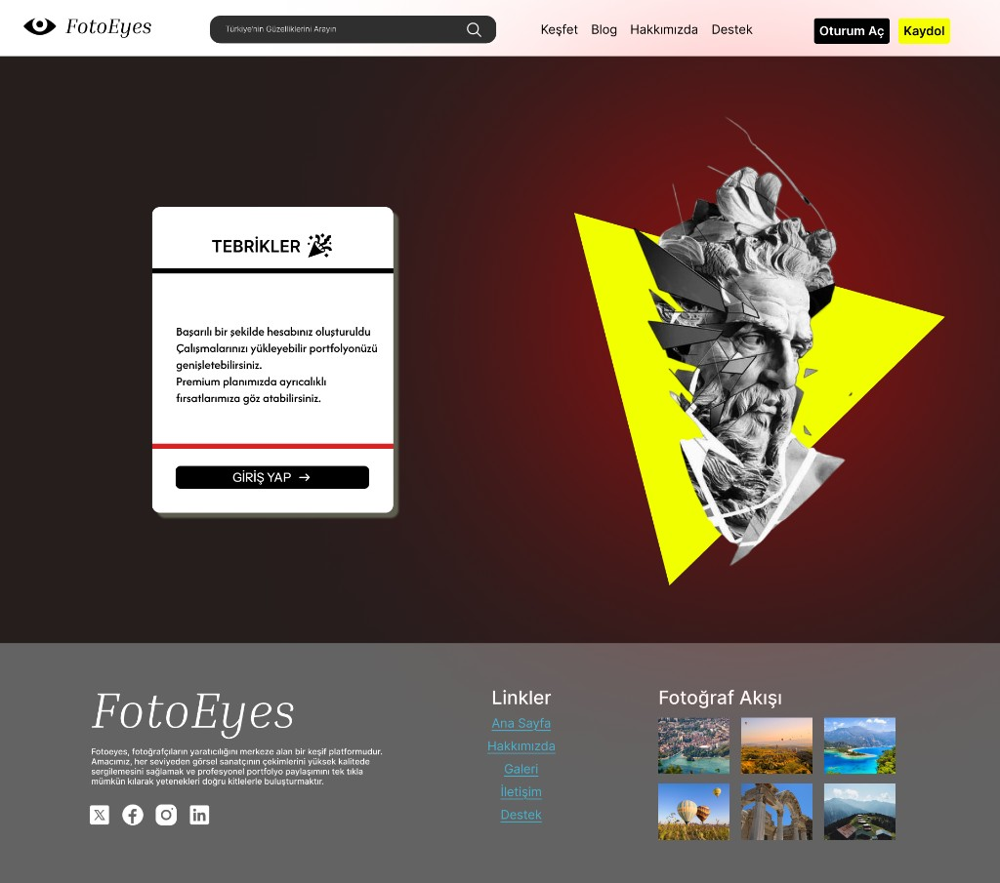
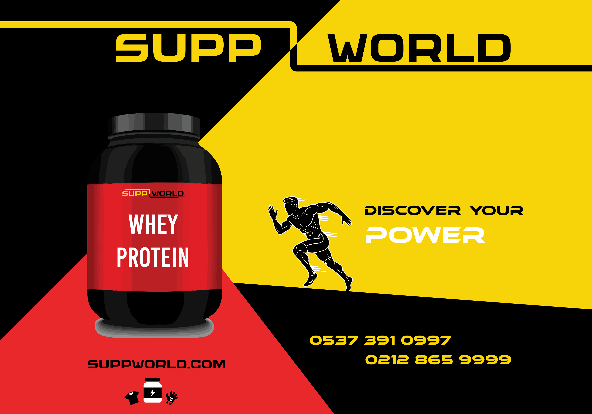
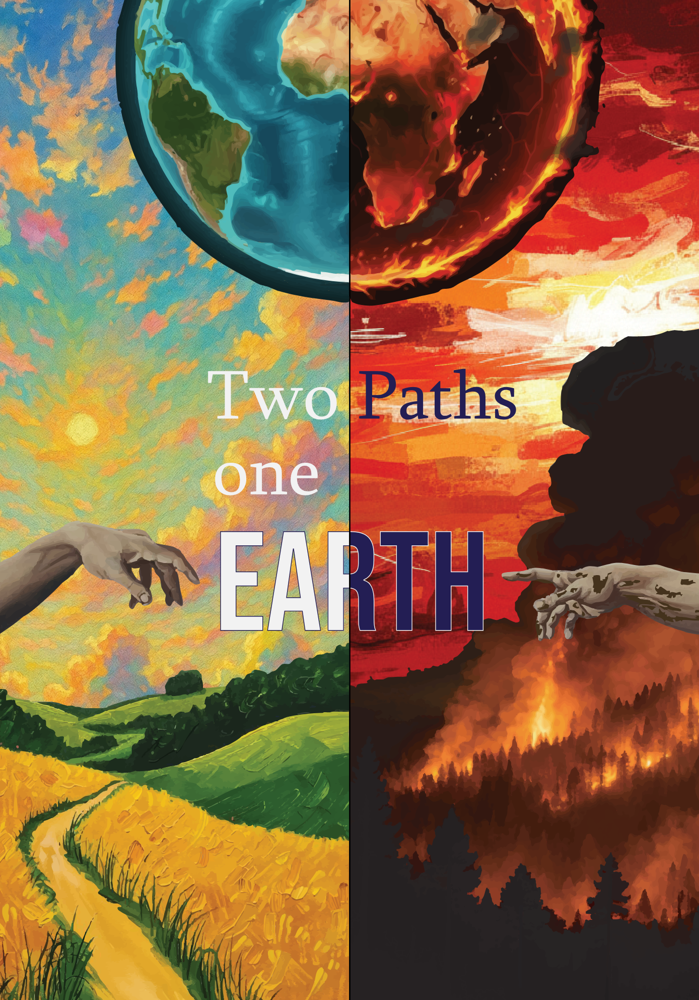
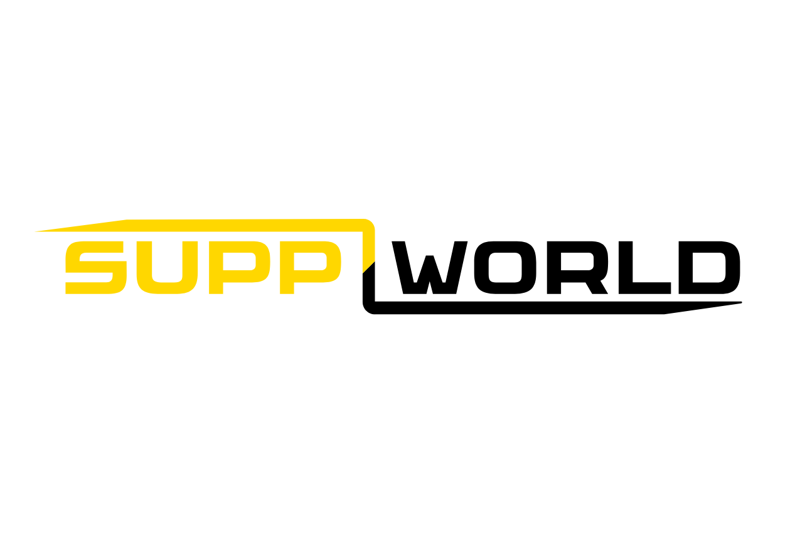
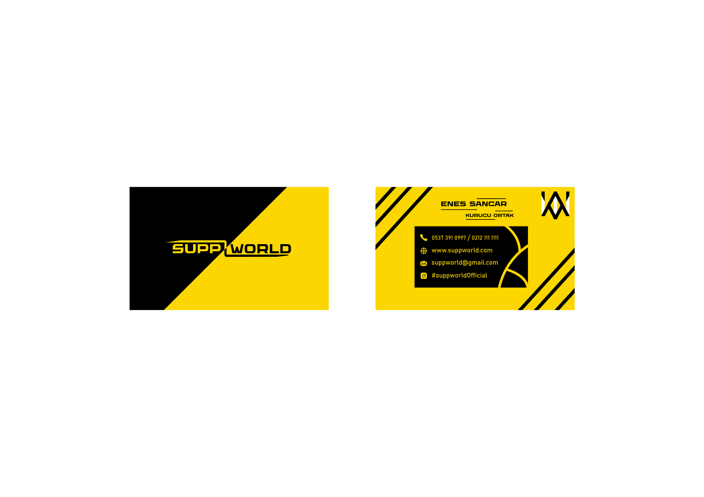
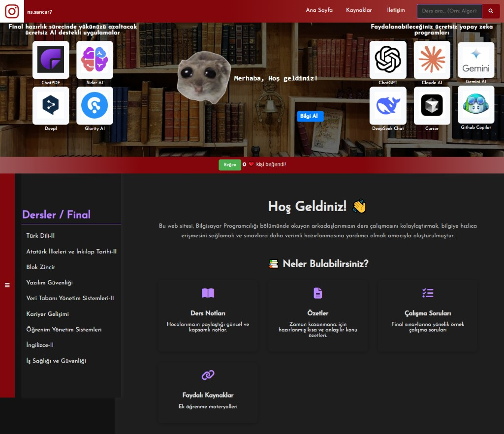

CineForum
Sinema ve dizi tutkunları için topluluk odaklı, yapay zeka destekli sosyal mobil uygulama konsepti.
UI/UX tasarımları, grafik tasarım, web geliştirme ve kişisel projelerimden bir seçki.
Sinema ve dizi tutkunları için topluluk odaklı, yapay zeka destekli sosyal mobil uygulama konsepti.

Türkiye'nin coğrafyasını ve doğa harikalarını profesyonel fotoğrafçılık, keşif ve topluluk deneyimiyle sunan platform konsepti.

Sporcu takviyeleri sektörü için hayali marka kimliği: logo, kartvizit ve reklam afişi tasarımları.

Küresel ısınmayı ve çevresel farkındalığı güçlü görsel metaforlarla anlatan afiş çalışması.

Kargo ve lojistik firması için çok sayfalı kurumsal web sitesi — hizmetler, şubeler ve iletişim.
İstanbul Kültür Üniversitesi öğrencileri için ders kaynakları, arama ve karanlık mod destekli web uygulaması.

Kişisel portfolyo — hero, yetenekler, hızlı erişim, proje vitrinleri ve iletişim bölümlerini tek sayfada sunan modern arayüz.
Sinema ve dizi tutkunlarını tek çatı altında toplayan, topluluk odaklı ve yapay zeka destekli sosyal mobil uygulama.
CineForum, kullanıcıların sadece içerik tüketmesini değil, aynı zamanda bu içerikler etrafında aktif bir topluluk oluşturmasını hedefler.
Türkiye'nin zengin coğrafyasını ve saklı kalmış doğa harikalarını vizör arkasından dijital dünyaya taşıyan fotoğrafçılık, keşif ve topluluk platformu.
FotoEyes, yalnızca bir galeri değil; fotoğrafları EXIF verileri ve coğrafi konumlarıyla belgeleyen yaşayan bir dijital kütüphanedir. Gezginlerin ve fotoğrafçıların karelerini keşif rotalarına dönüştürür; Unsplash, Pinterest ve 500px'in güçlü yönlerini yerel ve işlevsel bir dokuyla bir araya getirir.
«Doğayı tanıdıkça sever, sevdikçe koruruz» manifestosuyla ekolojik farkındalık ve sürdürülebilirliği desteklemeyi hedefler.
fotoeyes.com/kullaniciadi formatında LinkedIn ve sosyal çevrede kolay paylaşım.Koyu bordo gradient hero, sarı vurgu butonları ve klasik–modern tipografi karışımı; keşif ve sanat odaklı premium bir web deneyimi.
Figma dosyasını açSporcu takviyeleri sektöründe faaliyet gösteren; maksimum performansı, dinamik enerjiyi ve küresel güvenilirliği tek potada eriten modern, iddialı ve vizyoner bir marka konsepti.


Supp (supplement), gücü, kas gelişimini, motivasyonu, pre-workout enerjisini ve recovery sürecini simgeler. World, küresel otorite, geniş ürün yelpazesi ve profesyonel ekosistemi vurgular. SuppWorld; sporcular için yalnızca bir satıcı değil, bilim ve gücün buluştuğu eksiksiz bir «Takviye Dünyası»dır.
İstanbul Kent Üniversitesi Grafik Tasarım dersi — vize dönemi marka kimliği projesi.
Küresel ısınmayı, iklim krizini ve çevresel sorumluluğu güçlü görsel dil ve tipografiyle ele alan sosyal farkındalık afişi.
«Akım» başlıklı bu çalışma, gezegenimizin ısınma sürecini metaforik ve duygusal bir kompozisyonla aktarır. Amacı, izleyicide acil eylem ihtiyacı uyandırmak ve sürdürülebilirlik mesajını görsel hafızada kalıcı kılmaktır.
İstanbul Kent Üniversitesi Grafik Tasarım dersi — vize dönemi afiş projesi.
Kargo, parsiyel ve lojistik hizmetleri sunan bir firma için tasarlanan çok sayfalı kurumsal web sitesi.
Smart Cargo, İstanbul ve Türkiye genelinde hatlarıyla hizmet veren bir kargo markası için hazırlanan tanıtım sitesidir. Ana sayfa, hakkımızda, hizmetler ve iletişim/şubeler bölümlerinden oluşur.
Başakşehir / lojistik sektörü — kurumsal web tasarımı çalışması.
Siteyi gezFront-end ve grafik tasarım odaklı kişisel portfolyo sitesi; projeler, yetenekler ve iletişim kanallarını modern bir deneyimle bir araya getirir.
Responsive, koyu tema ve bileşen tabanlı düzen.
Siteyi gezİstanbul Kültür Üniversitesi Bilgisayar Programcılığı öğrencileri için hazırlanmış ders kaynakları ve çalışma platformu.

Ders notları, PDF kaynaklar ve ders sayfalarını tek bir arayüzde toplayan; arama, yan menü ve karanlık mod ile kullanılabilen bir okul projesi.